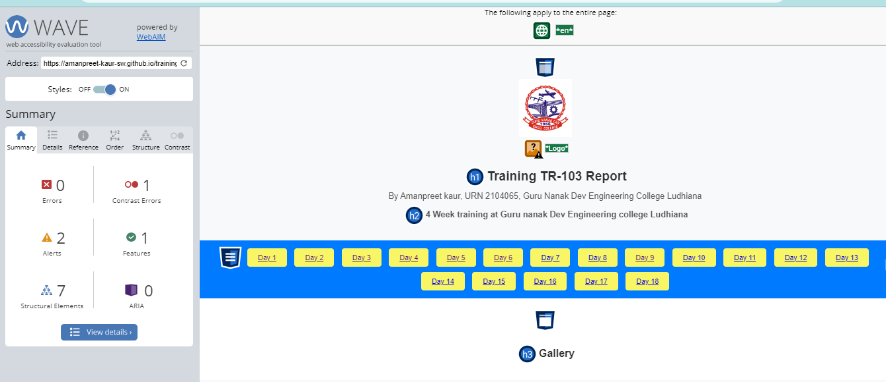

JIRA is a software development tool used for project management and issue tracking. It is a popular tool among software development teams to plan, track, and release software projects. JIRA provides a centralized platform for managing tasks, bugs, and other types of issues and it helps teams to organize and prioritize their work. The tool integrates with other software development tools and has a variety of customizable features and workflows that allow teams to adapt it to their specific needs. Additionally, JIRA also provides various reporting and dashboard features that help teams stay on top of their work and make datadriven decisions. JIRA supports multiple languages including English, French, etc. It is a platform independent tool. A 30-day free trial version is available on JIRA.
WAVE is developed and made available as a free community service by WebAIM at Utah State University. Originally launched in 2001, WAVE has been used to evaluate the accessibility of millions of web pages.
